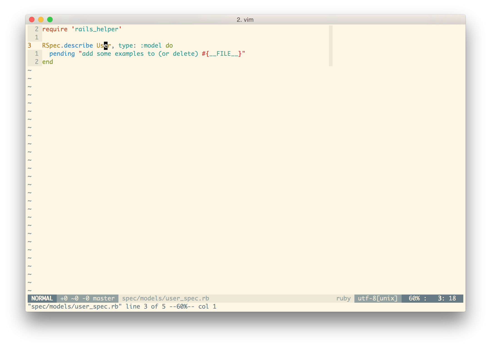
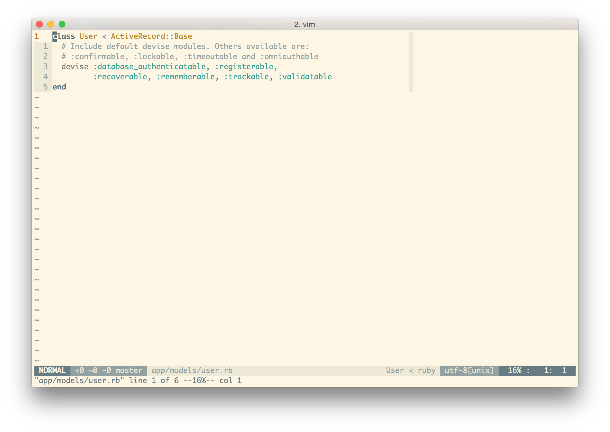
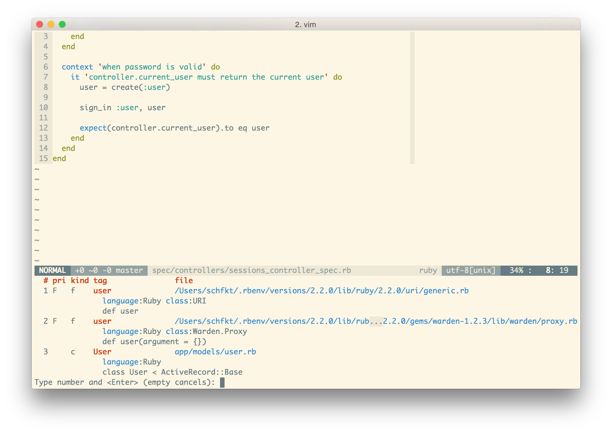
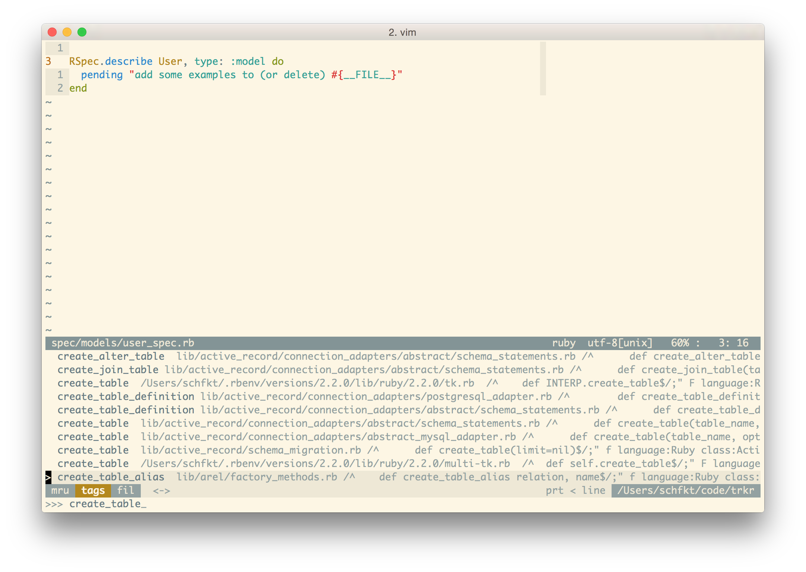
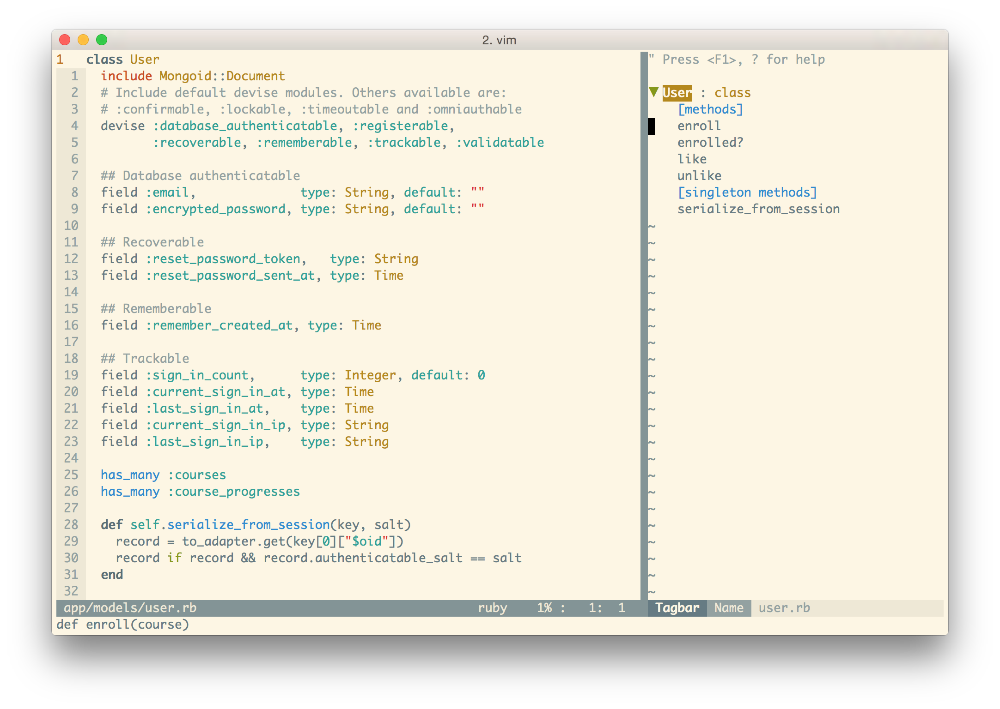
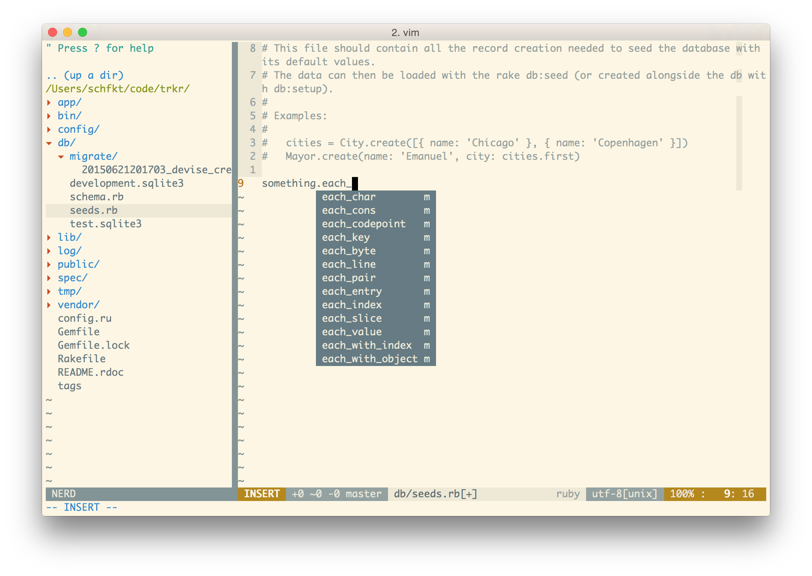

Vim, ctags и Ruby
Посмотрел недавно скринкаст с Aaron Patterson (который @tenderlove). Понравилось, как он владеет vim’ом. Больше всего запомнилось то, как Aaron шарился по документации прямо в исходниках гемов. И вот для быстрого поиска нужного метода он как раз использовал встроенную в vim поддержку ctags. Я же этой фичей вообще не пользовался, хотя и знал о ней. Решил, что надо бы попробовать, и не пожалел.
Установка и настройка ctags
В OS X из коробки есть какой-то бинарник ctags, но он неправославный. Нам же нужен exuberant ctags. Накатим его при помощи homebrew и возрадуемся:
$ brew install ctagsИ дабы убедиться, что ctags стал православным, запустим команду:
$ ctags --version
Exuberant Ctags 5.8, Copyright (C) 1996-2009 Darren Hiebert
Compiled: Mar 16 2015, 23:48:18
Addresses: <dhiebert@users.sourceforge.net>, http://ctags.sourceforge.net
Optional compiled features: +wildcards, +regexДля ctags можно создать глобальный конфиг, чтобы постоянно не указывать гору опций
при его запуске. Положить его нужно в ~/.ctags:
$ cat ~/.ctags
--recurse=yes
--tag-relative=yes
--fields=+l
--languages=ruby,javascript
--exclude=.git
--exclude=node_modules
--exclude=log
--exclude=*.min.jsOписание опций:
--recurse=yes– указывает, что при поиске файлов для сканирования заданную директорию нужно обходить рекурсивно.--tag-relative=yes– в тэг-файле пути к просканированным файлам будут указываться относительно этого самого тэг-файла.--fields=+l– необходимо для плагина YouCompleteMe. Об этом чуть ниже.--languages=ruby,javascript– теги для каких языков генерировать. Список всех поддерживаемых языков можно получить, запустивctags --list-languages.--exclude– какие файлы/папки не сканировать.
Используем ctags с vim’ом
Чтобы vim’у откуда было брать идентификаторы (они же тэги), нужно сперва запустить ctags, который в свою очередь сгенерирует файл с ними:
$ ctags
$ ll tags
-rw-r--r-- 1 schfkt staff 13K 28 июн 22:05 tagsПо-дефолту, vim как раз ищет тэги в файле tags в директории, в которой он запущен. Поэтому больше ничего конфигурировать не нужно и можно опробовать на деле следующие хоткеи/команды в vim’е:
CTRL-]– перейти к определению идентификатора, на котором сейчас расположен курсор.g]– вывести список всех мест, где находится идентификатор под курсором.CTRL+t– вернуться назад (после перехода по тэгу).:tag destroy– найти ключевое слово destroy. Аналогично тому, что делаетCTRL+].
Мне хватает этих команд, но на самом деле их гораздо больше. Полный список можно
глянуть в хелпе (:h tags).
Важный момент: после внесения изменений в код, ctags нужно запускать снова. Чтобы новые идентификаторы добавились в tags-файл. Делать это руками каждый раз утомительно. Но автоматизировать процесс можно, добавив следующую строчку в .vimrc:
au BufWritePost *.js,*.rb silent! !ctags 2> /dev/null &Таким образом Vim, после каждой записи в файл с расширением rb или js, будет
запускать команду ctags 2> /dev/null &.
Примеры использования команд в vim’е
Описание всех этих команд на словах может быть не совсем ясно. Особенно тому, кто и не знал об их существовании. Поэтому далее я приведу парочку наглядных примеров с экраноснимками.
Например, сейчас мы находимся в каком-то спеке, курсор расположен на User:

Жмём CTRL+] и оказываемся в этой самой модельке User.

Чтобы вернуться назад в спек, можно воспользоваться комбинацией CTRL+t.
Аналогично, к этой модельке можно перейти при помощи команды :tag User.
g] команда выводит список всех мест где найден идентификатор, расположенный
под курсором:

Интеграция с другими плагинами
YouCompleteMe
Этот плагин может собирать идентификаторы из файлов с тэгами и использовать эти идентификаторы для автодополнения. Чтобы воспользоваться фичей, необходимо:
- При генерации тегов запускать ctags с параметром
--fields=+l - Включить фичу, добавив строчку в .vimrc:
let g:ycm_collect_identifiers_from_tags_files = 1ctrlp.vim
CtrlP – это такой прикольный плагин, при помощи которого можно быстро переходить
к чему угодно (файлам, буферам, тэгам etc.). Он выводит список чего-то, и этот
список можно фильтровать, начиная печатать текст. Из коробки плагин умеет выводить
тэги и позволяет переходить к ним. Чтобы вывести список тэгов, нужно пульнуть
:CtrlPTag. Снизу появится окошко с тэгами:

На скриншоте видно, что список тэгов отфильтрован по create_table. Для перехода
по тэгу достаточно нажать Enter. У меня для удобства команда повешена на
хоткей:
nnoremap <leader>t :CtrlPTag<CR>Tagbar
Экраноснимок лучше тысячи слов: 
Вот эта панелька справа и есть Tagbar. Он собирает идентификаторы и отображает
их относительно классов, модулей etc. Довольно удобно. К идентификатору можно
также перейти, достаточно нажать Enter. При этом Tagbar не нуждается в
заранее сгенерированном файле с тэгами. Он генерирует его сам на лету и хранит
в памяти.
Всякие годные штуки для ruby
Братишка Tim Pope угорел и навернул достаточное количество всяких гемов и плагинов, которые сильно упрощают работу с ruby в vim’е. О них и пойдёт дальнейшее повествование.
Генерируем тэги для stdlib и гемов
Если вы, как и я, используете rbenv вместе с плагином ruby-build, то можно дополнить их другим плагином. После установки новой версии ruby при помощи ruby-build, он будет автоматически генерировать тэги для стандартной библиотеки этих самых ruby. Выполним следующие шаги:
- Устанавливаем плагин для rbenv:
$ git clone git://github.com/tpope/rbenv-ctags.git \
~/.rbenv/plugins/rbenv-ctags- Запускаем
rbenv ctags, чтобы сгенерировать тэги для активной версии ruby. Или жеrbenv ctags 2.2.0, чтобы сгенерировать тэги для версии 2.2.0. В дальнейшем тэги будут генерироваться автоматически после каждой установки новой версии ruby.
Осталось автоматизировать генерацию тэгов для гемов. Для этого вышеупомянутый Tim Pope напилил другой гем.
- Устанавливам гем:
$ gem install gem-ctags- Генерируем тэги для уже установленных гемов:
$ gem ctagsДелать всё это каждый раз руками после установки новой версии ruby не труъ. Автоматизируем процесс при помощи плагина rbenv-default-gems, который как раз и занимается накатыванием заданных гемов после установки ruby.
- Установим плагин:
$ git clone git@github.com:sstephenson/rbenv-default-gems.git \
~/.rbenv/plugins/rbenv-default-gems- Создадим для него конфиг со следующим содержимым:
$ cat ~/.rbenv/default-gems
gem-ctagsНу вот, теперь тэги у нас будут генерироваться автоматически как для стандартной библиотеки ruby, так и для устанавливаемых гемов. Осталось заставить vim использовать эти тэги.
Прикручиваем всё это дело к vim’у
Чтобы vim начал использовать все эти тэги, которые мы нагенерим для ruby, нужно накатить парочку плагинов за авторством того же самого Tim Pope.
Первым делом установим плагин vim-rbenv. Этот плагин указывает vim’у путь до используемой версии ruby и до файла с тэгами для неё. С этим плагином может возникнуть проблема, если вы используется в качестве шелла zsh. Vim попросту будет использовать всегда системную версию ruby вместо выбранной. На странице плагина есть пара вариантов решения этой проблемы. Мне же помогло следующее:
$ sudo mv /etc/{zshenv,zshrc}После рестарта шелла проблема исчезла.
Теперь установим плагин vim-bundler. Он будет указывать vim’у пути до тэгов от гемов, указанных в соответствующем Gemfile.
Заключение
Вот, собственно, и всё. Теперь у вас vim’е должнен быть сносный автокомплит, который дополняет идентификаторы и из stdlib, и из гемов, и из вашего кода. Да и все эти идентификаторы можно будет быстро и удобно искать. Картиночка напоследок: 